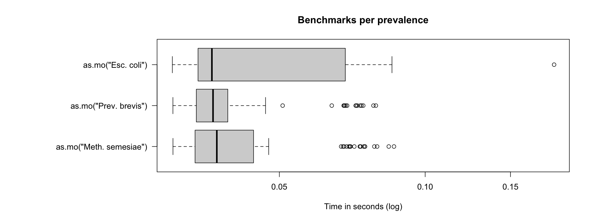

benchmarks.RmdOne of the most important features of this package is the complete microbial taxonomic database, supplied by the Catalogue of Life. We created a function as.mo() that transforms any user input value to a valid microbial ID by using intelligent rules combined with the taxonomic tree of Catalogue of Life.
Using the microbenchmark package, we can review the calculation performance of this function. Its function microbenchmark() runs different input expressions independently of each other and measures their time-to-result.
In the next test, we try to ‘coerce’ different input values into the microbial code of Staphylococcus aureus. Coercion is a computational process of forcing output based on an input. For microorganism names, coercing user input to taxonomically valid microorganism names is crucial to ensure correct interpretation and to enable grouping based on taxonomic properties.
The actual result is the same every time: it returns its microorganism code B_STPHY_AURS (B stands for Bacteria, the taxonomic kingdom).
But the calculation time differs a lot:
S.aureus <- microbenchmark(
as.mo("sau"), # WHONET code
as.mo("stau"),
as.mo("STAU"),
as.mo("staaur"),
as.mo("STAAUR"),
as.mo("S. aureus"),
as.mo("S aureus"),
as.mo("Staphylococcus aureus"), # official taxonomic name
as.mo("Staphylococcus aureus (MRSA)"), # additional text
as.mo("Sthafilokkockus aaureuz"), # incorrect spelling
as.mo("MRSA"), # Methicillin Resistant S. aureus
as.mo("VISA"), # Vancomycin Intermediate S. aureus
as.mo("VRSA"), # Vancomycin Resistant S. aureus
as.mo(22242419), # Catalogue of Life ID
times = 10)
print(S.aureus, unit = "ms", signif = 2)
# Unit: milliseconds
# expr min lq mean median uq max neval
# as.mo("sau") 8.0 8.2 11.0 8.4 8.6 34 10
# as.mo("stau") 37.0 37.0 41.0 38.0 40.0 65 10
# as.mo("STAU") 37.0 38.0 47.0 41.0 62.0 69 10
# as.mo("staaur") 8.1 8.2 16.0 8.4 8.8 57 10
# as.mo("STAAUR") 8.1 8.3 11.0 8.5 8.9 34 10
# as.mo("S. aureus") 14.0 14.0 21.0 14.0 36.0 37 10
# as.mo("S aureus") 13.0 14.0 20.0 15.0 16.0 47 10
# as.mo("Staphylococcus aureus") 4.7 4.8 8.6 4.9 6.2 39 10
# as.mo("Staphylococcus aureus (MRSA)") 640.0 650.0 680.0 660.0 680.0 790 10
# as.mo("Sthafilokkockus aaureuz") 330.0 350.0 390.0 390.0 430.0 500 10
# as.mo("MRSA") 8.0 8.5 17.0 9.0 33.0 43 10
# as.mo("VISA") 24.0 24.0 36.0 30.0 47.0 56 10
# as.mo("VRSA") 24.0 25.0 60.0 36.0 50.0 270 10
# as.mo(22242419) 120.0 120.0 130.0 130.0 140.0 150 10
In the table above, all measurements are shown in milliseconds (thousands of seconds). A value of 5 milliseconds means it can determine 200 input values per second. It case of 100 milliseconds, this is only 10 input values per second.
To achieve this speed, the as.mo function also takes into account the prevalence of human pathogenic microorganisms. The downside of this is of course that less prevalent microorganisms will be determined less fast. See this example for the ID of Methanosarcina semesiae (B_MTHNSR_SEMS), a bug probably never found before in humans:
M.semesiae <- microbenchmark(as.mo("metsem"),
as.mo("METSEM"),
as.mo("M. semesiae"),
as.mo("M. semesiae"),
as.mo("Methanosarcina semesiae"),
times = 10)
print(M.semesiae, unit = "ms", signif = 4)
# Unit: milliseconds
# expr min lq mean median uq
# as.mo("metsem") 1422.000 1474.000 1511.000 1515.000 1544.00
# as.mo("METSEM") 1381.000 1446.000 1457.000 1458.000 1477.00
# as.mo("M. semesiae") 14.390 14.520 18.050 15.000 17.64
# as.mo("M. semesiae") 14.330 14.570 17.690 14.740 15.14
# as.mo("Methanosarcina semesiae") 5.261 5.342 7.848 5.459 5.63
# max neval
# 1617.00 10
# 1520.00 10
# 39.73 10
# 39.72 10
# 29.36 10That takes 5.6 times as much time on average. We can conclude that looking up arbitrary codes of less prevalent microorganisms is the worst way to go, in terms of calculation performance. Full names (like Methanosarcina semesiae) are always very fast and only take some thousands of seconds to coerce - they are the most probable input from most data sets.
In the figure below, we compare Escherichia coli (which is very common) with Prevotella brevis (which is moderately common) and with Methanosarcina semesiae (which is uncommon):

Uncommon microorganisms take a lot more time than common microorganisms. To relieve this pitfall and further improve performance, two important calculations take almost no time at all: repetitive results and already precalculated results.
Repetitive results are unique values that are present more than once. Unique values will only be calculated once by as.mo(). We will use mo_name() for this test - a helper function that returns the full microbial name (genus, species and possibly subspecies) which uses as.mo() internally.
library(dplyr)
# take all MO codes from the example_isolates data set
x <- example_isolates$mo %>%
# keep only the unique ones
unique() %>%
# pick 50 of them at random
sample(50) %>%
# paste that 10,000 times
rep(10000) %>%
# scramble it
sample()
# got indeed 50 times 10,000 = half a million?
length(x)
# [1] 500000
# and how many unique values do we have?
n_distinct(x)
# [1] 50
# now let's see:
run_it <- microbenchmark(mo_name(x),
times = 100)
print(run_it, unit = "ms", signif = 3)
# Unit: milliseconds
# expr min lq mean median uq max neval
# mo_name(x) 566 598 628 621 645 782 100So transforming 500,000 values (!!) of 50 unique values only takes 0.62 seconds (620 ms). You only lose time on your unique input values.
What about precalculated results? If the input is an already precalculated result of a helper function like mo_name(), it almost doesn’t take any time at all (see ‘C’ below):
run_it <- microbenchmark(A = mo_name("B_STPHY_AURS"),
B = mo_name("S. aureus"),
C = mo_name("Staphylococcus aureus"),
times = 10)
print(run_it, unit = "ms", signif = 3)
# Unit: milliseconds
# expr min lq mean median uq max neval
# A 6.120 6.540 7.44 6.900 8.830 9.12 10
# B 13.600 13.800 14.50 14.200 15.000 16.30 10
# C 0.841 0.859 3.82 0.876 0.917 30.30 10So going from mo_name("Staphylococcus aureus") to "Staphylococcus aureus" takes 0.0009 seconds - it doesn’t even start calculating if the result would be the same as the expected resulting value. That goes for all helper functions:
run_it <- microbenchmark(A = mo_species("aureus"),
B = mo_genus("Staphylococcus"),
C = mo_name("Staphylococcus aureus"),
D = mo_family("Staphylococcaceae"),
E = mo_order("Bacillales"),
F = mo_class("Bacilli"),
G = mo_phylum("Firmicutes"),
H = mo_kingdom("Bacteria"),
times = 10)
print(run_it, unit = "ms", signif = 3)
# Unit: milliseconds
# expr min lq mean median uq max neval
# A 0.517 0.522 0.570 0.540 0.575 0.756 10
# B 0.536 0.550 0.584 0.559 0.579 0.801 10
# C 0.696 0.776 0.804 0.828 0.841 0.908 10
# D 0.531 0.552 0.597 0.576 0.616 0.784 10
# E 0.520 0.529 0.549 0.534 0.569 0.626 10
# F 0.483 0.491 0.519 0.517 0.521 0.580 10
# G 0.509 0.514 0.545 0.520 0.537 0.763 10
# H 0.464 0.514 0.555 0.542 0.593 0.698 10Of course, when running mo_phylum("Firmicutes") the function has zero knowledge about the actual microorganism, namely S. aureus. But since the result would be "Firmicutes" anyway, there is no point in calculating the result. And because this package ‘knows’ all phyla of all known bacteria (according to the Catalogue of Life), it can just return the initial value immediately.
When the system language is non-English and supported by this AMR package, some functions will have a translated result. This almost does’t take extra time:
mo_name("CoNS", language = "en") # or just mo_name("CoNS") on an English system
# [1] "Coagulase-negative Staphylococcus (CoNS)"
mo_name("CoNS", language = "es") # or just mo_name("CoNS") on a Spanish system
# [1] "Staphylococcus coagulasa negativo (SCN)"
mo_name("CoNS", language = "nl") # or just mo_name("CoNS") on a Dutch system
# [1] "Coagulase-negatieve Staphylococcus (CNS)"
run_it <- microbenchmark(en = mo_name("CoNS", language = "en"),
de = mo_name("CoNS", language = "de"),
nl = mo_name("CoNS", language = "nl"),
es = mo_name("CoNS", language = "es"),
it = mo_name("CoNS", language = "it"),
fr = mo_name("CoNS", language = "fr"),
pt = mo_name("CoNS", language = "pt"),
times = 100)
print(run_it, unit = "ms", signif = 4)
# Unit: milliseconds
# expr min lq mean median uq max neval
# en 23.52 25.12 30.94 26.03 26.90 68.07 100
# de 24.94 26.64 33.82 27.81 30.86 152.10 100
# nl 30.28 32.60 37.42 33.81 35.15 72.52 100
# es 24.86 26.55 31.91 27.42 28.91 80.24 100
# it 24.54 26.61 32.10 27.45 28.35 69.43 100
# fr 24.75 26.30 30.43 27.50 28.37 64.56 100
# pt 24.95 26.38 31.37 27.32 28.38 66.08 100Currently supported are German, Dutch, Spanish, Italian, French and Portuguese.